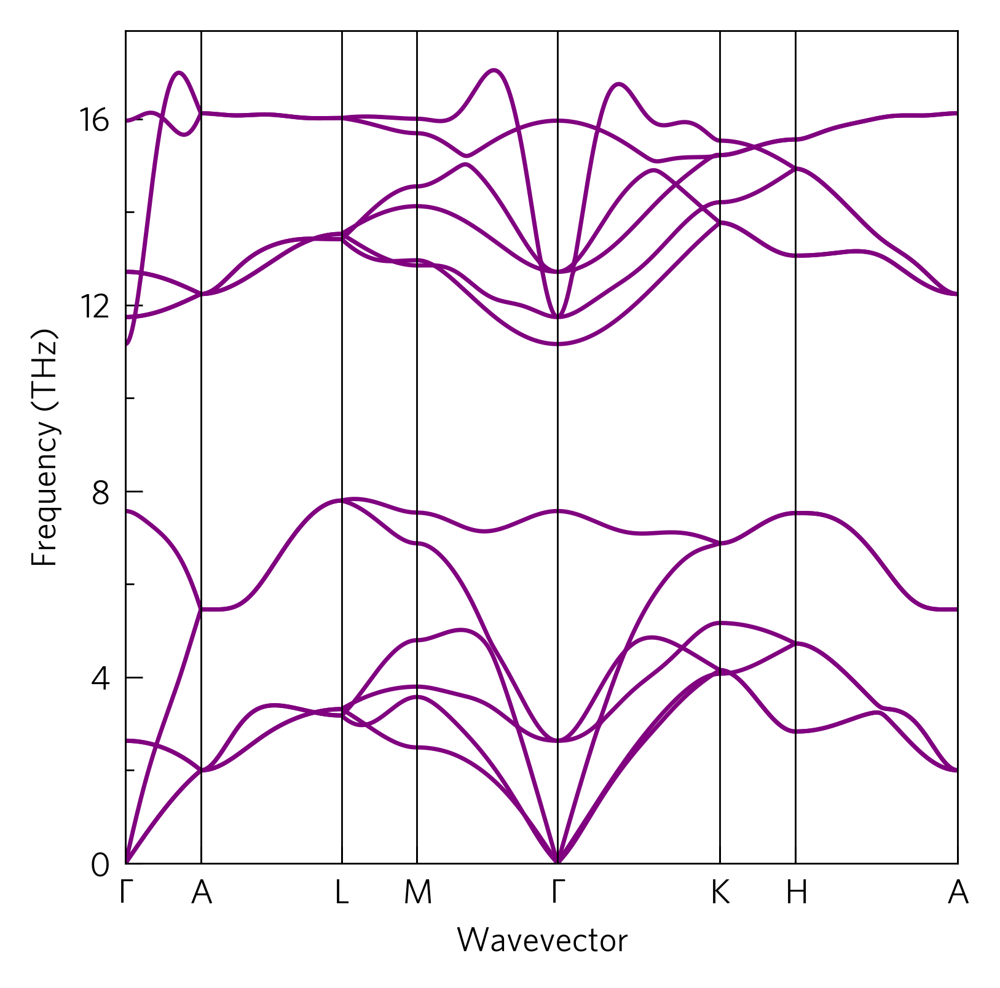

Tutorial-01: Python Foundations
The most basic plots in ThermoParser consist of four commands:
axes
load
plot
save
ThermoParser offers ways to do the first three (the last is trivial), but each part can be replaced by your own code if you prefer.
The CLI version of this code is:
tp plot phonons ../data/zno/band.yaml
And the python version is:
1#!/usr/bin/env python3
2
3import tp
4
5# Axes
6fig, ax, _ = tp.axes.small.one()
7
8# Load
9dispersion = tp.data.load.phonopy_dispersion('../data/zno/band.yaml')
10
11# Plot
12tp.plot.phonons.add_dispersion(ax, dispersion)
13
14# Save
15fig.savefig('tutorial-01.png')
Axes (line 6)
ThermoParser offers a number of pre-sized axes in the axes module.
Within, there is a large module, which provides presentation-
oriented figures, but these take relatively long to load so here we use
small, which is better for papers. The functions consist of the
number of primary axes, and a description where necessary. In this
case, we use the most basic one.
Every function returns three things:
figure: The whole plot area, used in step 4.
axes: Where the data goes, used in step 3.
add_legend: Adds a legend. We don’t use it here, so we’ve thrown it away by assigning it to
_. Giving it any name and not using it has the same effect. Legends will be discussed in Tutorial-03.
This command can easily be replaced with matplotlib.pyplot commands
such as figure and subfigs.
Load (line 9)
ThermoParser contains several data loading functions for different
inputs in the data.load module. At their most basic, these take a
file to read from, and return a dictionary of the data.
While you can load your own data, ThermoParser takes several steps to ensure consistent format and units between codes and also with some old versions of these codes; and with the plotting functions. It also consistently applies custom unit conversions and provides metadata including array shapes, units and data sources, so care should be taken if this step is done manually.
Plot (line 12)
ThermoParser contains a number of plotting functions in the plot
module. At their most basic, they take a set of axes to plot on, and a
data dictionary to read from. All plot functions also take a number of
customisation option, including all the kwargs from the underlying
matplotlib function.
This stage can be replaced with ordinary matplotlib functions such
as ax.plot, which can be assisted by a number of ancillary
ThermoParser functions discussed in Tutorial-05.
Save (line 15)
Simply figure.savefig(name.extension).
More Help
ThermoParser has extensive docs. Docstrings are available throughout the code itself, if you are using IPython or Jupyter and you can access them by typing the command name followed by two question marks, and IDEs normally have options too. If you are on the master branch, they can also be found here.